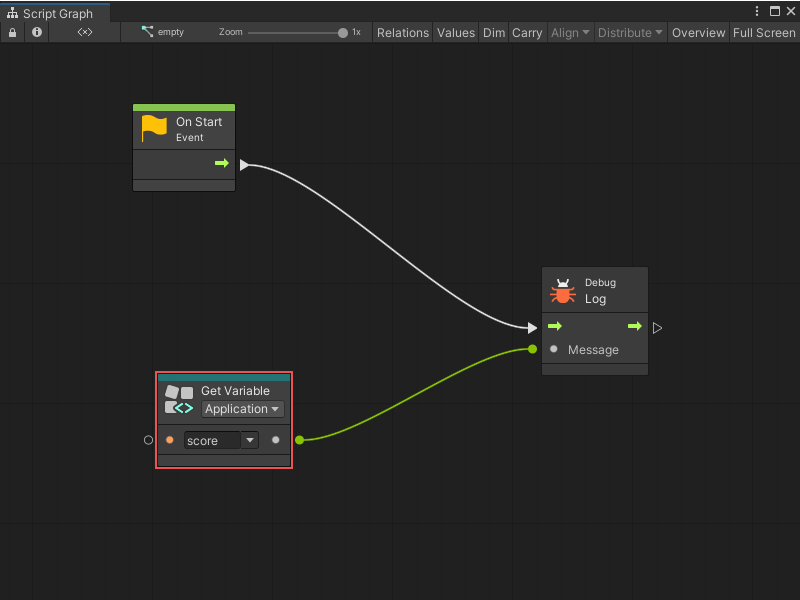
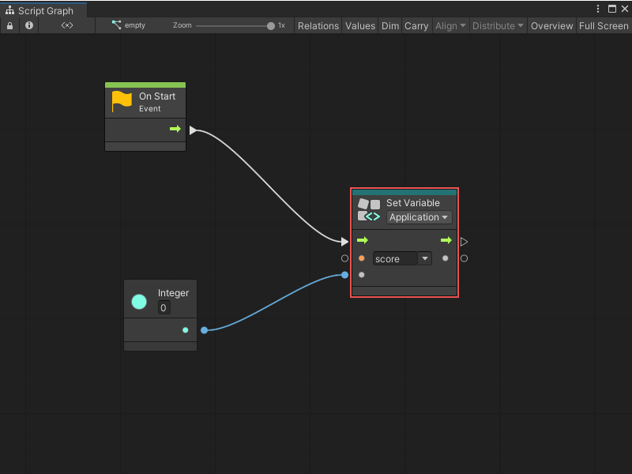
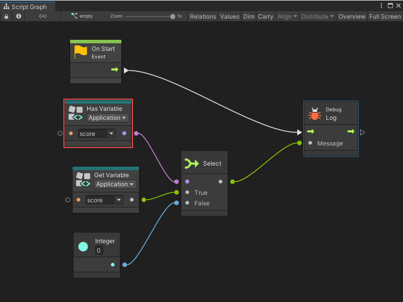
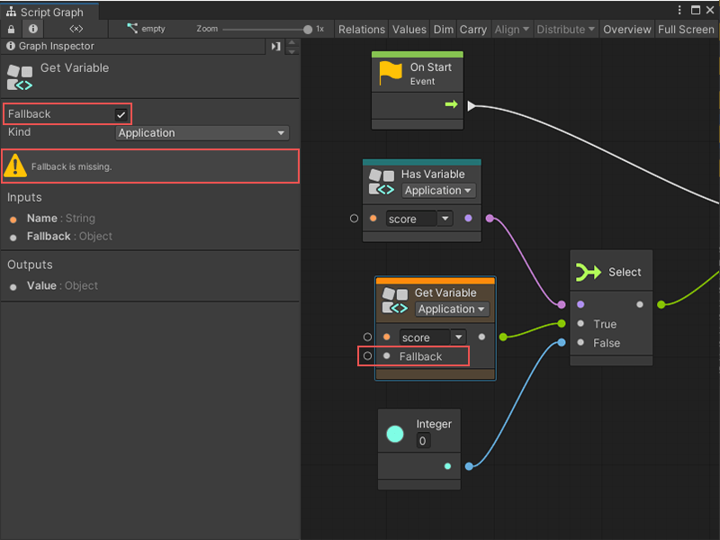
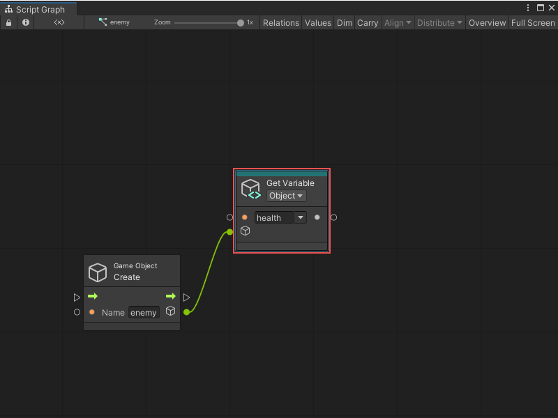
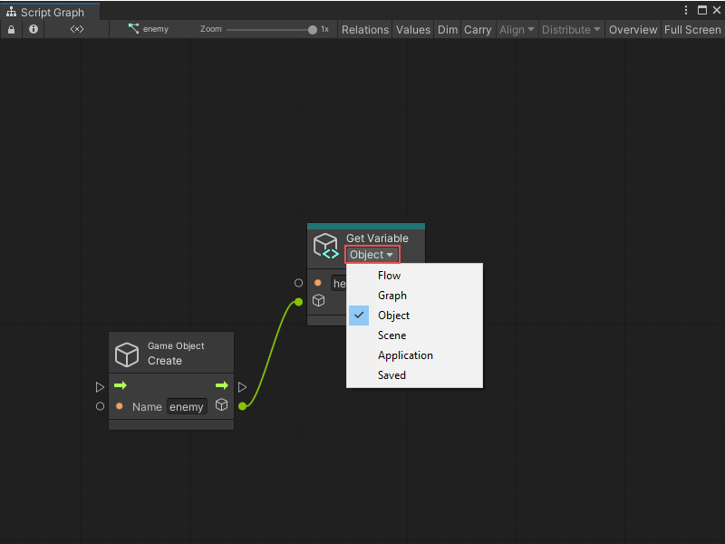

Variables node¶
[!NOTE] For versions 2019/2020 LTS, download the Visual Scripting package from the Unity Asset Store.
There are six kinds of variable nodes. Each of these variable nodes has three object nodes:
Get, to retrieve the value of the variable
Set, to assign a new value to the variable
Is Defined, to check whether the variable is defined
They are located under the Variables category in the fuzzy finder.
Variable nodes are teal colored.
Dynamic Typing¶
For get / set nodes, variables are not statically typed, meaning their type can change at runtime. Their type displays as an object when defined from the blackboard window.
Get Variable¶

The get variable node requires the name of the variable as an input and returns the Value as an output.
Set Variable¶

The set variable nodes require the name of the variable and the new value assigned to it as inputs. For convenience in layouting, it returns this same value as an output.
Connect the control input port to indicate when the variable should be assigned and, optionally, the control output port to indicate what to do after.
Using a set node with a variable name that doesn’t yet exist creates the variable.
Has Variable¶
The Has Variable nodes require the name of the variable as an input and returns an Is Defined boolean as an output. They’re useful to check if a variable has been created, and often, provide a fallback value if it hasn’t.

Do the same thing more easily by checking the Fallback box in the graph inspector for a Get Variable node. This adds a Fallback input to the node that is returned if the variable hasn’t been defined:

Dynamic Variables¶
As the name of the variable is a standard value input port, connect it to any other port that returns a string. Refer to “dynamic variables”, that is, variables whose reference might change during play mode.
Object Variables¶
Object variable nodes require an additional input for the Source. That port indicates which game object the variable you’re referring to is defined. When left to its default value, they look on the current object (self).
For example, the Get Variable node gets the value of the health variable on the player2 object.

Dropdowns¶
The kind and the name dropdowns can quickly configure the variable nodes. The name suggestions are contextual and are based on the existing variables of this kind and on the other variable nodes in the current graph.

Drag and Drop¶
Drag and drop items from the blackboard window directly into the graph to create matching nodes.
By default, a Get node is created.
If the Alt key is held, a Set node is created.
If the Shiftkey is held, an Is Defined node is created.
Variables API¶
Visual scripting provides an easy API to handle variables, to get or set their value and verify if they are defined. All these operations are available from the Variables class.
For example:
Variables.Application.Set("score", 100);
Usings¶
Add the following usings to your C# script to access the API:
using Unity.VisualScripting;
Scope¶
Graph¶
To access variables on a graph, create a graph reference. This is basically a path to the nested graph from its root machine.
To get the root graph on a machine:
var graphReference = GraphReference.New(flowMachine, true);
To access nested graphs, pass their parent nodes as additional parameters:
var graphReference = GraphReference.New(flowMachine, new IGraphParentElement[] { superUnit }, true);
To pass a graph reference:
Variables.Graph(graphReference)
Object¶
To access variables on an object:
Variables.Object(gameObject)
Scene¶
To access scene variables, do one of the following:
Variables.Scene(scene)
Or:
Variables.Scene(gameObjectInScene)
Or:
Variables.ActiveScene
Application¶
To access application variables:
Variables.Application
Saved¶
To access saved variables:
Variables.Saved
Operations¶
In these examples, the lowercase scope refers to one of the previous scopes.
Get¶
To get the value of a variable, use the Get method with a name parameter:
scope.Get("name");
Note that variables are not strongly typed; they need to be cast manually. For example:
int health = (int)Variables.Object(player).Get("health")
Set¶
To set the value of a variable, use the Set method with the name and value parameters:
scope.Set("name", value);
For example:
Variables.Object(player).Set("health", 100);
Because variables are not strongly typed, pass any value to the second parameter, even if the variable currently is of a different type.
[!NOTE] Using the set method with a variable name that does not yet exist defines a new variable.
Is Defined¶
To check if a variable is defined, use the IsDefined method with a name parameter:
scope.IsDefined("name");
For example:
if (Variables.Application.IsDefined("score"))
{
// ...
}